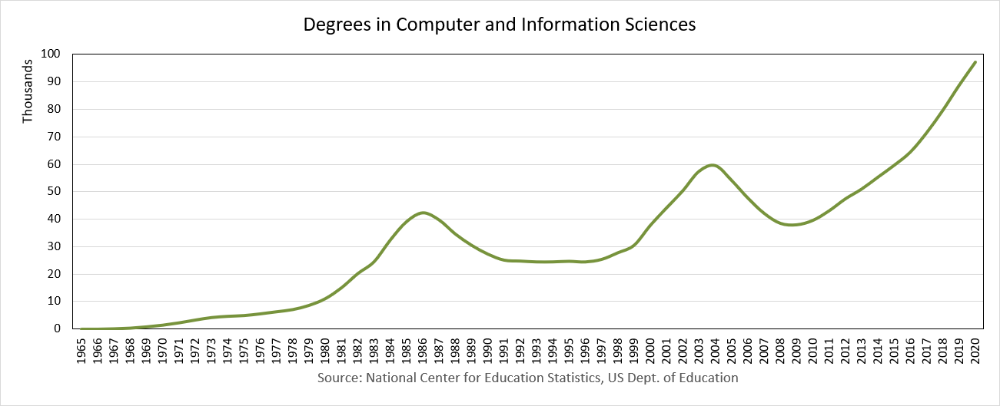

About Ian Parberry's Towers of Hanoi
Over two decades ago Mike Fellows (pictured below, left) and I wrote the following in "SIGACT Trying to Get Children Excited About CS", Computing Research News, Vol. 5, No. 1, p. 7, 1993 (pdf):

"What would we like our children – the general public of the future – to learn about computer science in schools? We need to do away with the myth that computer science is about computers. Computer science is no more about computers than astronomy is about telescopes, biology is about microscopes or chemistry is about beakers and test tubes. Science is not about tools. It is about how we use them and what we find out when we do."
(Part of this quote is often misattributed to Edsgar Dijkstra, pictured at right. The part that is misattributed to Dijkstra should actually be attributed to Mike Fellows.) We then went on to say:
"It may come as a surprise to some that computer science is full of activities that children will find exciting even without the use of computers."
Much has changed in the world of computers since 1993. We now have desktop PCs that are more powerful than 1993's supercomputers and pocket devices that allow us to access the sum total of human knowledge in an instant (which devices, as it is popularly said, are used primarily to watch funny cat videos). Much has changed also in the world of computer science education since 1993. For one thing, active learning, in which students undertake activities instead of being lectured at in class, has taken the leap from general education to computer science classes.
{kind=link}
Examining the graph of CS Bachelor's degrees awarded in the US from 1971 to 2011 above (click for a larger image), we see that undergraduate Computer Science enrolments appear to be increasing exponentially after a slump during the first decade of this century. This kind of increase has happened twice before, but the difference now is that the general public, dizzy from exposure to the internet and the world of tech startups, now seem to agree that everybody needs to learn how to program. But there's the rub, as Shakespeare's Hamlet might have put it. To be an effective programmer one needs to know much, much more than the syntax and semantics of a few programming languages. Alan Perlis (seen below left) wrote in "Epigrams on Programming," ACM SIGPLAN Notices, Vol. 17, No. 9, pp. 7–13, 1982:
"It is against the grain of modern education to teach children to program. What fun is there in making plans, acquiring discipline in organizing thoughts, devoting attention to detail, and learning to be self-critical?"
(In case you are sarcasm-impaired, yes, he's being sarcastic. At least I think so.)
While the Towers of Hanoi seems to have been used in introductory programming classes since the Dawn of Time, it is my experience that most instructors don't use it to the fullest extent. Instead of using it (paraphrasing Perlis) to encourage students to make plans, acquire discipline in organizing thoughts, and devote attention to detail, I've seen instructors simply flash a pseudocode algorithm and tell students to get on with it.
For a quarter of a century I've used this wooden Towers of Hanoi in my Algorithms class so that I can do things like wave it around, pause it, restart it, and solve it with the 5 Restrictions on Motion right there, live in front of the students. This works well for a class of around 30, but in Spring 2016 I taught a class of 110 in a very wide classroom with two projectors. Clearly my small wooden toy wouldn't be visible in such a setting. This motivated me to create Ian Parberry's Towers of Hanoi, which I can show on two projectors simultaneously so that the whole class can see it clearly, and students can use themselves while at home between watching humorous cat videos. In addition, the history page contains a real-time simulation of the Towers of Hanoi with 64 discs which can be restarted at various points in history to emphasize to students what exponential time really means.
Its technology was only a dream in 1993, but in the same vein as our quote from Computing Research News, Ian Parberry's Towers of Hanoi can be used in hands-on activities that enable students to engage in algorithmic thinking, which is key to becoming a programmer. Only the last two sets of activities actually involve programming. The beginning activities are at the level of an elementary schooler. At the other end of the scale, some of the Algorithm Analysis Activities involve some quite hairy mathematics that would challenge a graduate student. In between, you should be able to find activities that stretch the abilities of students at almost all levels.